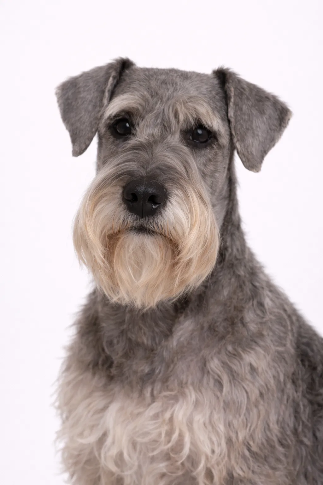

Terrier
Small
Cesky Terrier
Created by crossing Scottish and Sealyham Terriers, the Cesky is a calmer, gentler terrier. They're excellent family dogs with a distinctive silky coat.
Origin
Czech Republic
Lifespan
12-15 years
Height
25-32 cm (10-13 in)
Weight
6-10 kg (13-22 lbs)
⦿ Is This Breed Right for You?
✓ Best For
- Families with children
- Apartment dwellers
- Those wanting a calm terrier
✗ Not Ideal For
- Those avoiding grooming
- Those wanting a high-energy dog
Our Verdict: Created by crossing Scottish and Sealyham Terriers, the Cesky is a calmer, gentler terrier. They're excellent family dogs with a distinctive silky coat.